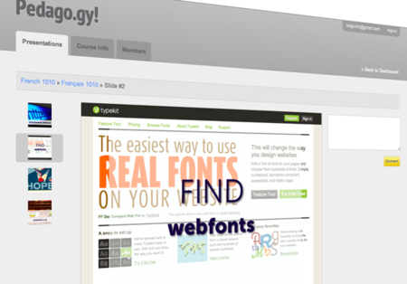

Bret Fund, a professor in CU-Boulder's Leeds School of Business, walked into dojo4 with a great idea he outlined in three sentences. After meeting with a few dojo ninjas, he left with dozens of user stories, a clear sense of the project's scope, and the assurance that dojo4 could deliver on a tight budget.
In short, Bret wanted to build a slide sharing, commenting, and note-taking application allowing teachers to share presentations and notes with students, while permitting students to comment on slides and pose questions either to teachers or fellow students.
Given the lean nature of the project, UI designer Alyssa, backend specialist Garett, and frontend guru Justin leveraged dojo4's "Base Rails App" to iterate rapidly and share those iterations with Bret. Alyssa produced tapflows and wireframes that further cut development times, guiding Garett and Justin as they tailored the base app to Bret's needs.
"Bret's a great client to work with because he's very helpful in defining requirements," beams Alyssa. Garett agrees, "Bret was really responsive when we shared iterations but also tremendously patient during the development process, providing lightning-fast feedback that helped us immensely."
For his part, Bret's excited that his colleagues now "can actually see what the web app does vs just hearing about it." He's set to use it in class this coming fall semester.
Here at dojo4 we're looking forward to Bret's feedback and to further collaborations with CU-Boulder.